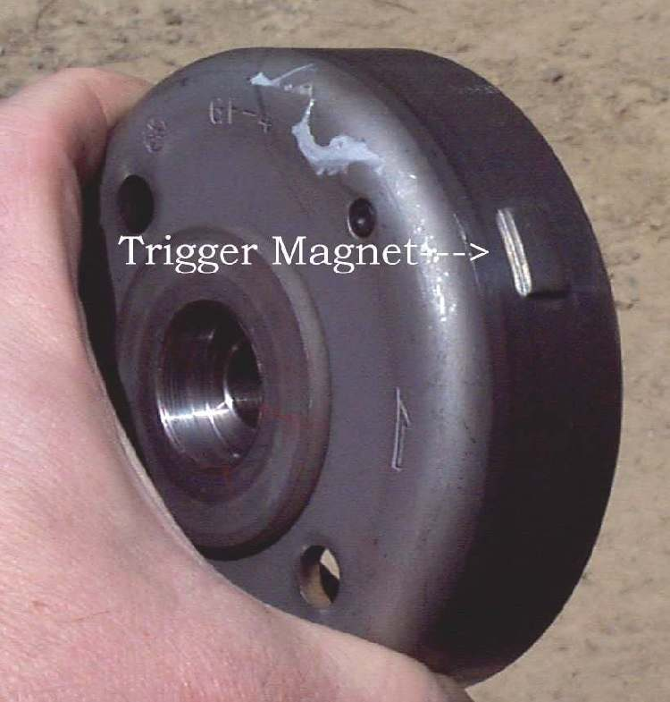

The pick-up (also called pulser coil or crank sensor) is a small coil next to the flywheel, under the left engine cover. A bump on the flywheel (the reluctor) passes it once every turn. On the K-Light 125 it is part of the stator and its two wires run in the same plug.
What it does
Each time the bump passes, the pick-up makes a small voltage pulse. The CDI or ECU uses this pulse to know where the piston is and when to fire the spark (and, on injection, when to inject). Without a pulse there is no spark at all. Heat, oil, a damaged wire or metal dirt on the magnet can weaken the signal; a large gap to the flywheel makes it too weak at cranking speed.
Signs it is worn or failing
- No spark and cranks but will not start.
- Cuts out randomly, then restarts.
- Coil fails when hot-type symptoms that are really the pick-up.
- Backfire on start if the reluctor or flywheel is loose.
- Engine warning light with a crank sensor code.
When to replace it
When its resistance is open, shorted or out of range, or its peak voltage at cranking is too low, after checking the plug and wiring. Follow your bike's manual.
What to match when buying
- Match the part number or make and model. On many bikes the pick-up is sold only with the stator plate.
- Match the plug, wire length and mounting holes. Air gap to the flywheel matters; keep any shims.
Fitting notes
- Home job to test: Test the ignition pick-up. Fitting a stator or pick-up means removing the left cover: workshop if a flywheel puller is needed.
- Clean all metal dust off the flywheel magnets before refitting.
- Use the K-Light pick-up bolt torque only on the K-Light.
- Set the air gap between the pick-up and the flywheel magnet with a non-magnetic (brass or plastic) gauge, as close as possible without touching. Use the value in your bike's manual.
Reference (K-Light 125)
| Item | Value | PDF page |
|---|---|---|
| Resistance (blue/white to green/white) | 150 ± 10 Ω at 20 °C | 87 |
| Peak voltage at cranking | above 1.7 V | 85 |
| Pick-up bolts | 6 to 9 N·m | 82 |